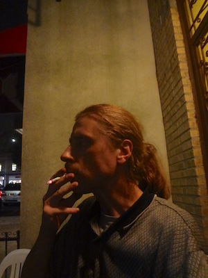
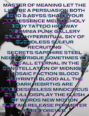

Jester-Knight
Literature
Film
Music
Visual Art
Tributes
Submissions
Links
Contact
Rus Khomutoff

Biography
Rus Khomutoff is a neo surrealist language poet based in Brooklyn, NY. His poetry has appeared in Erbacce, Occulum, Poethead, Former People Journal and Burning House Press. In 2016 he released his debut ebook Immaculate Days. He is on twitter @rusdaboss
Radia (chapbook), available at https://voidfrontpress.org
Click below for Rus' work:

(Click to view full-size)
Poems 2 (.pdf) NEW!!!
Poems (.pdf)